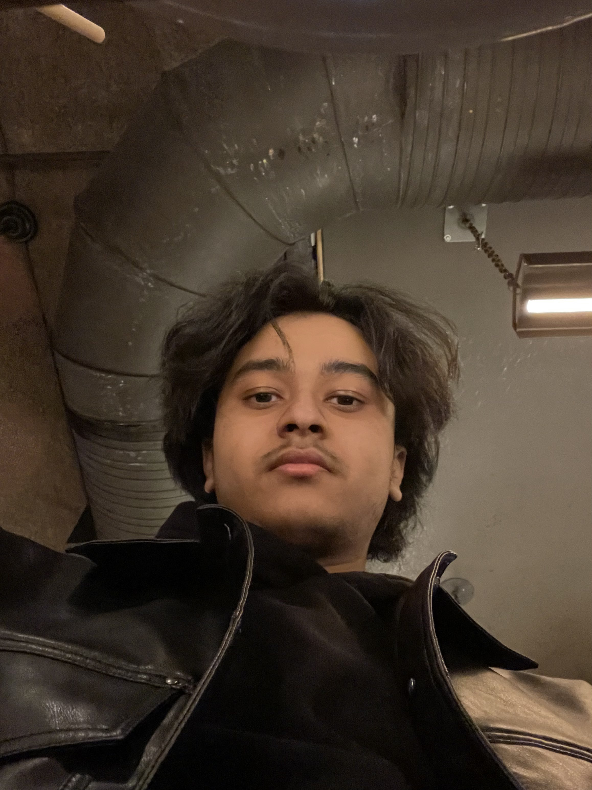

Home

Hello, my name is Hewad Tahiri!
I am a second year Networking & IT Security student at Ontario Tech University.
I work at Interscope Records, a division of Universal Music Group, in the Digital and Management departments.
My assigned artists are Playboi Carti, Ken Carson, Destroy Lonely, and Pi'erre Bourne.
My main hobbies consist of creating programming and networking related projects, and playing basketball.
I hope to one day work full-time/in-person at Interscope Records in their Santa Monica headquarters.